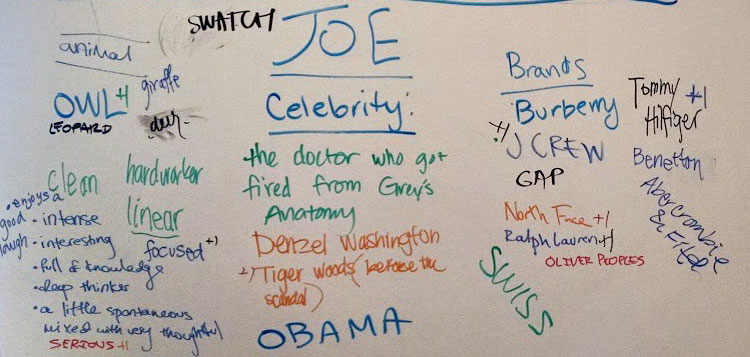
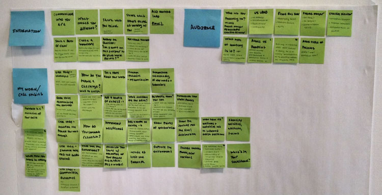
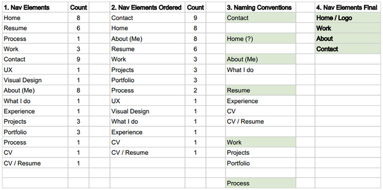
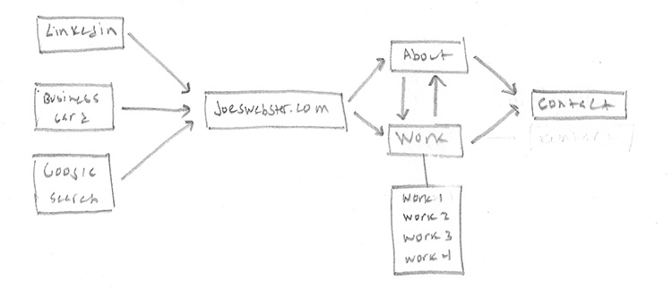
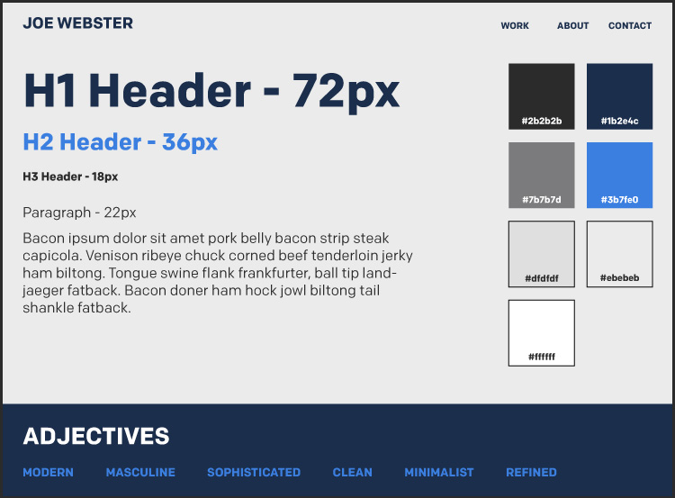
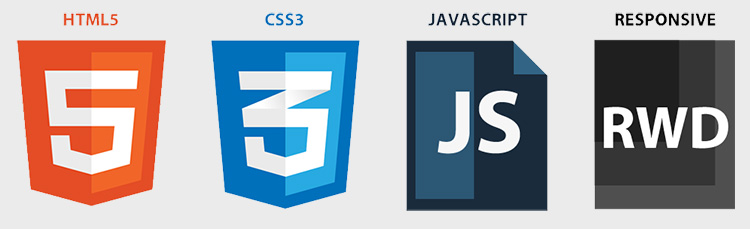

I built Joeswebster.com to demonstrate to the world who I am and the UX work I’m capable of. I treated the creation of my portfolio like any other project and applied the full UX design process.
It was important that I first defined my core purpose because it would set the tone and communicate the type of work I strive to create. After several sessions of an iterative question-asking technique called “5 Whys” I came up with the following purpose:
"I strive to build products that enable users to successfully achieve their goals in less time than ever. Why? Because time is precious."
I wanted the look and feel of my portfolio to closely match my own personality so I recruited my UX designer friends to help me better understand the adjectives, animals and celebrities that best describe me.
Creating a collage of images helped me visually explore and convey the essence of my personal brand. I analyzed the images I collected and decided that my portfolio’s visual design should embody the following adjectives: modern, clean and minimalist.
I collected portfolio tips from two hiring manager interviews and various website articles and then wrote them on individual post-it notes. I organized the notes into four themes: Info, Audience, My Work, and Design and referred to them several times throughout the UX process.
In the process of researching portfolio best practices I was able to create a persona hypothesis. Doing so helped me better understand the perspective and needs of my primary persona: the busy hiring manager.
A competitive analysis of other portfolios’ navigation elements helped me define my own. I tallied the frequency of nav elements from a handful of portfolios(1) and ordered them by total(2). I then explored different ways to say the most popular elements(3) and then selected my favorites(4).
A user flow helped my better understand the path by which hiring managers and other users would navigate through and interact with my portfolio.
As I entered the design phase I started with sketching. Using a few portfolio sites as inspiration I tested a number of potential layouts by concurrently sketching for mobile, tablet and desktop devices. Below are sketches of the current website layout.
Although my initial moodboard aided in defining my brand, it was too vague. I built upon my previous work by creating a style tile that defined my portfolio’s typography, colors and general visual language.
Sketched layouts and style tile complete, I combined the two deliverables to create Adobe Illustrator mockups. I prefer wrapping up the visual design prior to moving into development so that I can code independently of making design decisions.
I coded the website responsively so it was accessible and easy to consume on all devices. I used a variety of web technologies to build my portfolio including HTML, CSS/SASS, Jquery, the Jeet grid system, git and github pages.
Once my website was deployed, I asked friends and family to test drive my site. I gained valuable feedback and incorporated it into the design of my portfolio.